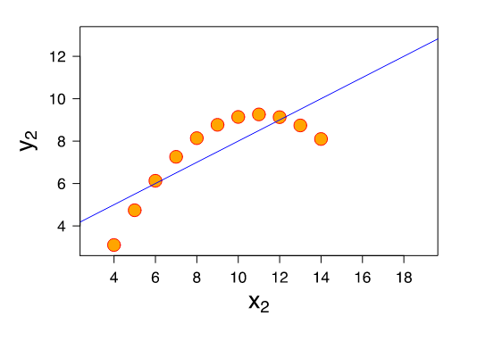

Researcher Discretion in Descriptive Analysis¶
More than anything, the goal of descriptive analyses is to extract patterns from otherwise incomprehensibly messy data and present them to readers in a digestible manner.
But intrinsic to this is choosing what constitutes a pattern (and is thus something worth reporting), and what information can be safely discarded. Descriptive analysis, in other words, always entails setting aside lots of information. After all, the only way to not set aside information would be to literally hand your original dataset over to the reader. All summarization for descriptive analysis – be that reporting summary statistics and plotting simple distributions, or running sophisticated clustering algorithms or dimensionality reduction tools – therefore requires the researcher to decide what is and what is not important.
But herein lies the hazard of descriptive analysis: readers are counting on you, the data scientist, to determine the meaningful patterns in the data and filter out presumably irrelevant variation. And thus it is incumbent upon you to ensure that you are highlighting meaningful patterns, and only setting aside things that do not matter.
This may seem obvious, but in practice, this is often a place that students struggle. That is because most tools (be those functions for calculating means and standard deviations, or unsupervised machine learning algorithms like Principle Component Analyses (PCAs) or clustering algorithms) always “work” in the sense that they will always provide you with a result. And so it is always possible to just run your tool and report the result.
The problem is that just because these tools provide a result doesn’t mean the result is meaningful. As a result, it is easy to provide readers with a false sense of the data. Readers (in almost any context except during academic peer review) will generally assume that if you have decided to present a statistic, it must be meaningful, important, and informative. You may know that a mean is just \(\frac{1}{N} \Sigma x_i\), but if you present it to the reader, they will generally assume that it is a meaningful characterization of the central tendency of the data. Moreover, if you provide averages of specific variables, readers will interpret those variables as important.
And so in choosing what to include in your reports, papers, or presentations, you are not just a neutral pipeline for delivering statistics – your choices for what to include will also be taken as signals of importance by your reader. In other words, you aren’t just communicating the values of a set of statistics; you’re also implicitly communicating a lot about the importance of those statistics for understanding the data.
With that in mind, in this reading we will discuss two questions you should ask yourself whenever you are presenting a descriptive analysis:
Am I faithfully representing the full data?
Am I presenting the data that is most important?
Faithful Representation¶
The fundamental goal of descriptive analysis is to take messy, incomprehensible data in its raw form and extract from it summaries of the most critical features of that data. When you are doing this, it is sometimes helpful to think of yourself as a guide for the eventual reader of your analysis. And as a guide, your goal is to ensure that they understand the essential nature of your data without having to dive into themselves.
With this in mind, it can be helpful when presenting data to ask yourself whether what you have presented gives a faithful representation of the data, and to think about what the reader may infer after seeing just what you present.
Suppose, for example, you have been asked to evaluate the performance of an instructor. You receive that professor’s final exam scores, and you find that the average grade in the class was an 85. Great! Sounds like things are going well.
But let’s suppose that when you dig in a little more, you find that the actual grades in the class are bimodal – all the grades in the class were either 100s or 0s. Now ask yourself: is just reporting the average grade in the class really communicating the nature of this data? I would argue not – most readers will likely assume the data has a somewhat normal distribution around that mean value of 85 (given that is often what occurs in test scores), and so are likely to infer that the professor is doing a reasonable job teach their students, and not have reason to suspect that 15% of the class failed in the worst possible way for some reason.
This is a simple example, but the principle generalizes. Suppose, for example, I ran a linear model that showed that income rose with age, and that a person 10 years older than another likely earns $10,000 more on average. Imagine, in your mind, what you think of when you hear that.
Now supposed I showed you the following plot, where \(x_2\) is age in 5 year bins and \(y_2\) is income in 10 thousand dollar increments:

Yup… my characterization of the linear fit is technically accurate, but clearly the data is doing something not captured in that summarization. That’s because linear models estimate linear trends; applied to non-linear data they still give you an answer, but I don’t think anyone would say that telling the reader that people who are ten years older earn $10,000 more on average is faithfully representing the non-monotonic nature of the data.
So how do you protect yourself from these kind of errors? The specific answer often depends on the method in question (e.g. for linear regressions, you might want to look at residual plots; for simple means you might want to plot a histogram), but a general rule of thumb is that you should always do analyses that go beyond what you’re presenting to the reader. Plot your data. See if your mean and median are radically different. Check your residual plots. Correlate your primary variable of interest with other variables just to see if there’s some story there you’re missing. Explored your data to the point that you’re not finding anything new and important during your explorations that add substantive meaning to the summary statistics you would like to provide the reader. If you just present a summary statistic without digging around behind it, you really can’t know if your summary statistic is faithfully representing the data.
Choosing What To Ask and Present¶
OK… by now you’ve probably noticed that I’ve been saying you want to make sure you faithfully represent the “important” and “critical” properties of your data, but I haven’t defined those terms. And here’s why: there are no objective definitions of these terms. What is important depends both (a) on the context, and (b) on the value system of you (the data scientist) and your stakeholder.
Context¶
To illustrate the importance of context, suppose you have data on antibiotic resistant infections in a hospital. If you were brought in by the hospital facilities director who wanted to learn what could be done to reduce infections by, say, removing fabric chairs that are hard to disinfect, the location of infections is likely important. If, by contrast, you were brought in by someone studying how the ways antibiotics were prescribed impacted infections, you would instead want to focus on the treatment histories of patients. And if you were hired by the hospital itself who just wanted to reduce infections by any means possible, you’d want to study both to know where future efforts might be best targeted.
The features of the data that are important, in other words, depends on what we may be able to do in response to what we learn. Telling the hospital facilities manager that one of the biggest contributors to antibiotic resistance is the use of antibiotics in raising livestock may be true, and important to society, but not in the context of your stakeholder.
Values¶
The role of values is more subtle, but no less important.
Suppose you are a policy maker choosing between two possible policies for reducing \(CO_2\) emissions in the United States. You are told:
Policy A would reduce \(CO_2\) emissions by 95%, have only a minimal impact on unemployment and business profits, and would require a 100 million dollar tax.
Policy B would reduce \(CO_2\) emissions by only 90%, would have a moderate impact on unemployment and business profits, and would require a 200 million dollar tax.
Which would you choose?
Now suppose I also told you that the 100 million dollar in taxes from Policy A would come entirely from taxing people who live below the poverty line, while the 200 million dollar tax for Policy B would be collected from all Americans in proportion to their income. Does that change how you see the issue?
People tend to make decisions on the basis of the information that is available to them, and so what questions get asked (and what data is thus presented) can have a huge impact on how decisions are made. And as a data scientist, you will often be in control of what questions are being asked, and so it is incumbent upon you to ensure that your stakeholders are presented with all the data that you feel is important for them to know.
This is actually one of the big reasons that the lack of diversity in data science is such a problem – not white men are intrinsically misogynistic or racist, but because our life experiences influence what we think is important, and thus what we ask our data (Context for non-Duke students reading this: I am a white male).
Consider this infamous (though thankfully low stakes) illustrative example of a major tech failure (seriously, go watch the video): the camera that only sees White people. We can’t know exactly what went wrong, but I think it’s safe to say that were there more black developers working at HP, surely one of them would have stopped to ask the question “does this work as well for black faces as white faces?” But no one did, and so this product shipped.
OK, fine, you say – but that was a silly web-cam and HP is not exactly at the forefront of technological innovation. A more serious tech company would never make that kind of mistake, would it? Oh wait… Google did! Their Google Photos product tagged photos of dark-skinned people as “Gorillas”. And how to we know? Yup, because they released that product too.
To be clear, the problem is not just that these companies created racist algorithms – as we’ll discuss later in this class, almost any machine learning tools trained on public data will end up reflecting all the racist and misogynistic biases of our society. The problem is that they shipped the racist products! No one in these companies thought to stop and ask the question: “hey, before we roll this out, should we check to see how this behaves with people who don’t look like our predominantly light-skinned workforce?”
And yes, these are relatively low stake examples. But sadly these mistakes are not limited to low-stakes contexts. Later in this course we’ll discuss how the real-world use of biased algorithms has resulted in more Black people being unfairly sent to jail and women being discriminated against in hiring.
(And it is also the case that these are machine learning examples, not descriptive analyses per se. Machine learning examples get a lot more press, so it’s easy to point to these kinds of news stories. But while the principle that the questions we ask reflect our values is especially important in descriptive analyses, it also has broad salience, as illustrated here.)
So remember: when deciding what to look at and report in your analyses, remember that people will make decisions on the basis of the data you provide, so if you don’t stop to ask a question about, say, gender or racial bias, odds are it won’t be something considered by your stakeholders.